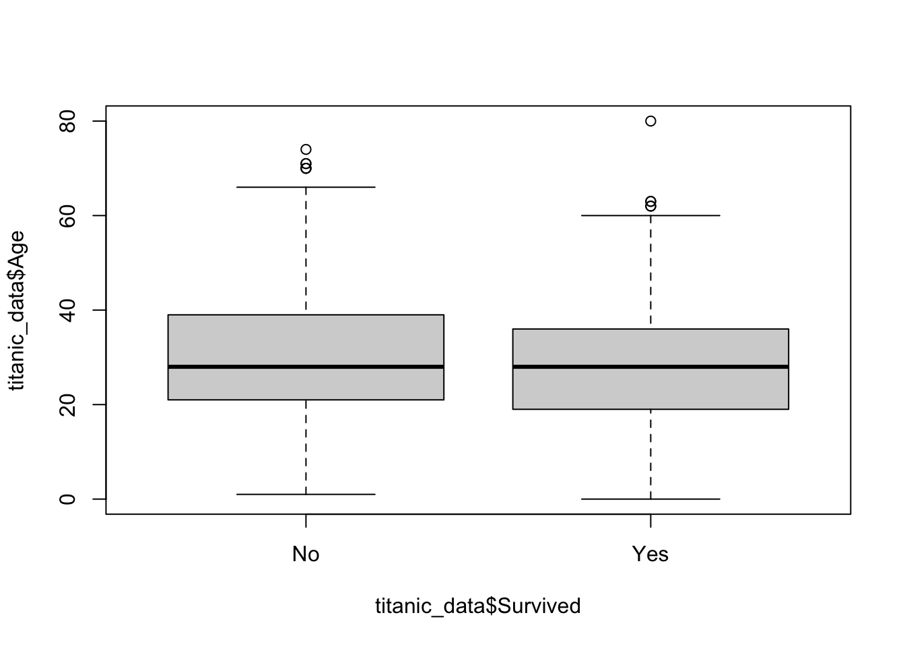
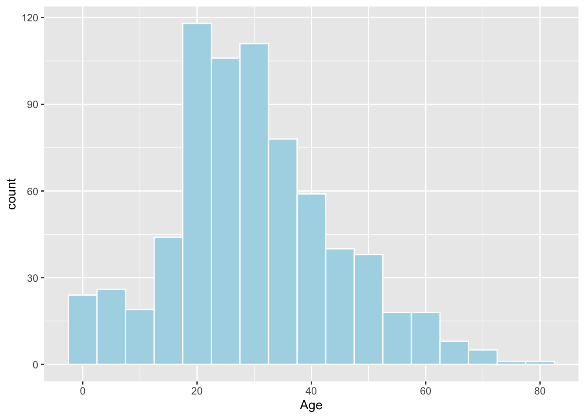
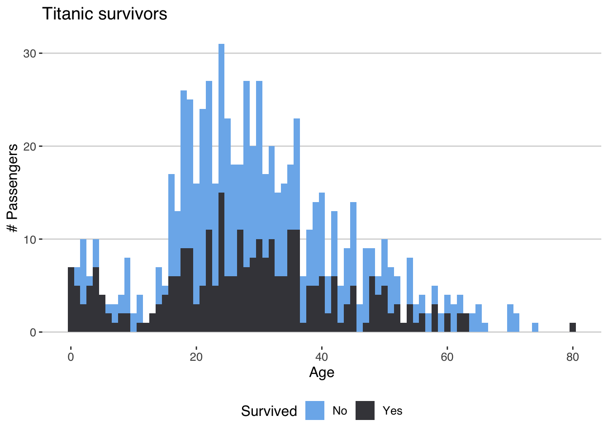
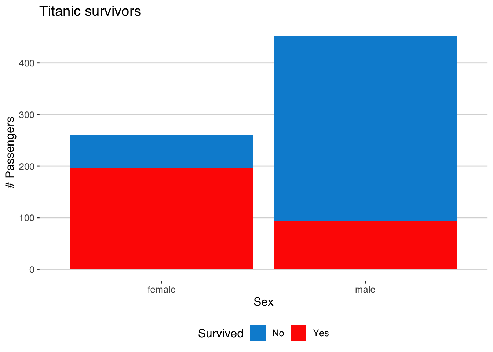
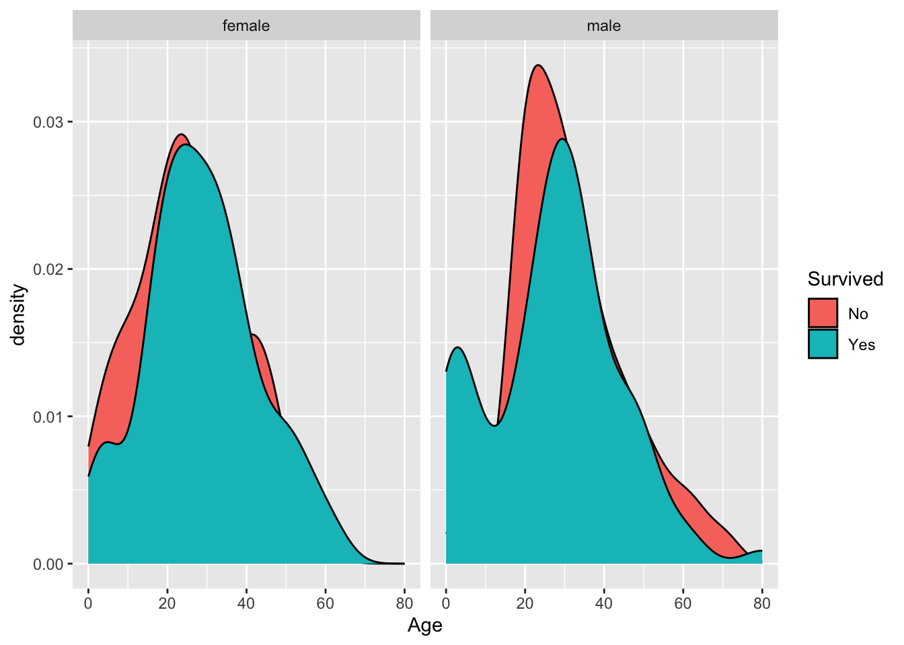
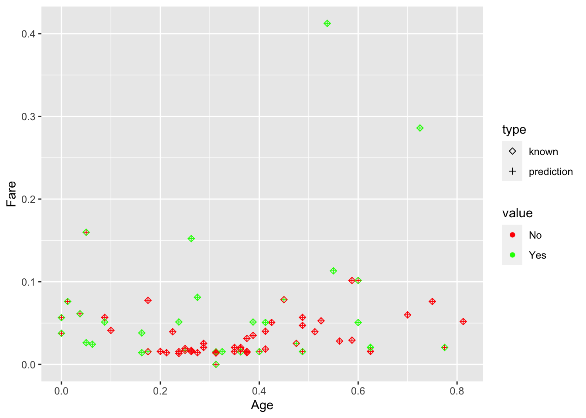

Código
titanic_raw <- read_csv('train.csv')Clasificación con el conjunto de datos titanic.
El hundimiento del Titanic es una de las tragedias marítimas más conocidas de la historia. El 15 de abril de 1912, durante su viaje inaugural, el Titanic se hundió después de chocar contra un iceberg. En el accidente murieron 1502 personas de las 2224 que habían embarcado, incluyendo pasajeros y tripulación. Una de las razones por las que no se encontraron más supervivientes fue la falta de espacio en los barcos salvavidas. Así, aunque la suerte sin duda sonrió a los supervivientes, también resultaron más favorecidos algunos grupos de personas, como las mujeres, los niños y los pasajeros de la clase superior.
Cargamos el conjunto de datos titanic desde train.csv.
titanic_raw <- read_csv('train.csv')Transformamos los datos, seleccionamos columnas y eliminamos filas con na.
titanic_data <- titanic_raw %>%
mutate(Survived = ifelse(Survived == 0, 'No', 'Yes')) %>%
mutate_at(c('Sex', 'Survived', 'Pclass'), as.factor) %>%
mutate_at(c('Age', 'Parch'), as.integer) %>%
select(Survived, Pclass, Sex, Age, SibSp, Parch, Fare) %>%
drop_na()
titanic_data# A tibble: 714 × 7
Survived Pclass Sex Age SibSp Parch Fare
<fct> <fct> <fct> <int> <dbl> <int> <dbl>
1 No 3 male 22 1 0 7.25
2 Yes 1 female 38 1 0 71.3
3 Yes 3 female 26 0 0 7.92
4 Yes 1 female 35 1 0 53.1
5 No 3 male 35 0 0 8.05
6 No 1 male 54 0 0 51.9
7 No 3 male 2 3 1 21.1
8 Yes 3 female 27 0 2 11.1
9 Yes 2 female 14 1 0 30.1
10 Yes 3 female 4 1 1 16.7
# ℹ 704 more rowsResumen estadístico básico de los datos: mínimos, máximos, medias, medianas, cuartiles, etc.
summary(titanic_data) Survived Pclass Sex Age SibSp
No :424 1:186 female:261 Min. : 0.00 Min. :0.0000
Yes:290 2:173 male :453 1st Qu.:20.00 1st Qu.:0.0000
3:355 Median :28.00 Median :0.0000
Mean :29.68 Mean :0.5126
3rd Qu.:38.00 3rd Qu.:1.0000
Max. :80.00 Max. :5.0000
Parch Fare
Min. :0.0000 Min. : 0.00
1st Qu.:0.0000 1st Qu.: 8.05
Median :0.0000 Median : 15.74
Mean :0.4314 Mean : 34.69
3rd Qu.:1.0000 3rd Qu.: 33.38
Max. :6.0000 Max. :512.33 table(titanic_data$Survived)
No Yes
424 290 Los cuartiles se pueden ver gráficamente también, por ejemplo para Age según si sobreviven o no.
boxplot(titanic_data$Age ~ titanic_data$Survived)
El histograma sirve para observar la distribución de los valores de una variable (cuáles se repiten y cómo).
ggplot(data = titanic_data) +
geom_histogram(aes(x = Age), binwidth = 5, color = "white", fill = "lightblue")
Podemos observar cómo se comporta la variable Age según Survived.
ggplot(titanic_data) +
geom_histogram(aes(x = Age, fill = Survived), binwidth = 1) +
labs(title = "Titanic survivors", x = "Age", y = "# Passengers", fill = "Survived") +
theme_hc() + scale_fill_hc()
O Sex según Survived.
ggplot(titanic_data) +
geom_histogram(aes(x = Sex, fill = Survived), stat="count") +
labs(title = "Titanic survivors", x = "Sex", y = "# Passengers", fill = "Survived") +
theme_hc() + scale_fill_fivethirtyeight()Warning in geom_histogram(aes(x = Sex, fill = Survived), stat = "count"):
Ignoring unknown parameters: `binwidth`, `bins`, and `pad`
La función de densidad es una versión suavizada (y normalizada) del histograma, útil para datos continuos. Podemos profundizar en la exploración realizada con el histograma.
ggplot(data = titanic_data) +
geom_density(aes(x = Age, fill = Survived)) +
facet_wrap(~ Sex)
La Figura 1 muestra que el comportamiento de hombres y mujeres es ligeramente diferente.
Binarizamos las variables categóricas con dummyVars. La biblioteca dummies no está disponible en CRAN.
dobj <- dummyVars(~., titanic_data[2:7])
titanic_binarized <- predict(dobj, titanic_data) %>%
as_tibble() %>%
mutate(Survived = titanic_data$Survived)Normalizamos los datos para el cálculo de distancias con preProcess .
sobj <- preProcess(titanic_binarized[c('Age', 'Fare')], method=c("range"))
titanic_scaled <- predict(sobj, titanic_binarized)Separamos las instancias que se usarán como entrenamiento de los individuos de validación usando createDataPartition de caret.
set.seed(0)
trainIndex <- createDataPartition(titanic_scaled$Survived, p = .90, list = FALSE)
train <- titanic_scaled[trainIndex, ]
val <- titanic_scaled[-trainIndex, ]Podemos aplicar k-NN para clasificar los datos de validación a partir de las instancias de entrenamiento.
knn.pred <- knn(train[2:7], val[2:7], train$Survived, k = 5)Calculadas las predicciones de los datos de validación, podemos comprobar los aciertos.
table(knn.pred, val$Survived)
knn.pred No Yes
No 38 12
Yes 4 17Podemos marcar sobre el gráfico de Age vs Fare los valores conocidos y las predicciones.
plot_data <- val %>%
mutate(prediction = knn.pred) %>%
rename(known = Survived) %>%
gather(type, value, prediction, known) %>%
mutate(id = row_number())
ggplot(data = plot_data) +
geom_point(aes(x = Age, y = Fare, shape = type, color = value)) +
labs(x = "Age", y = "Fare") +
scale_colour_manual(values=c("red", "green")) +
scale_shape_manual(values=c(5, 3))
knn.pred <- knn(train[2:7], val[2:7], train$Survived, k = 20)
(t <- table(knn.pred, val$Survived))
knn.pred No Yes
No 38 10
Yes 4 19error_rate <- (t[1,1] + t[2,2]) / nrow(val)En este caso, disponemos de un conjunto adicional test.csv, para el que también podemos calcular predicciones. En este caso no disponemos de las salidas reales, por lo que no podemos calcular los aciertos.
test_raw <- read_csv('test.csv')
test <- test_raw %>%
mutate_at(c('Sex', 'Pclass'), as.factor) %>%
mutate_at(c('Age', 'Parch'), as.integer) %>%
select(Pclass, Sex, Age, SibSp, Parch, Fare) %>%
drop_na() %>%
predict(dobj, .) %>%
predict(sobj, .) %>%
as_tibble()
knn.pred <- knn(train[2:7], test[2:7], train$Survived, k = 5)
knn.pred %>% as_tibble()# A tibble: 331 × 1
value
<fct>
1 No
2 No
3 No
4 No
5 No
6 No
7 No
8 No
9 No
10 No
# ℹ 321 more rows